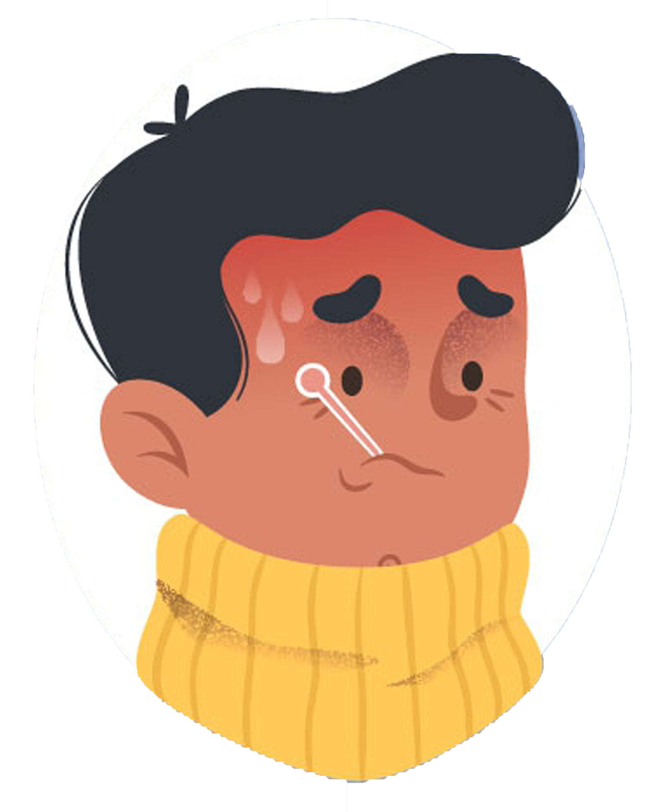
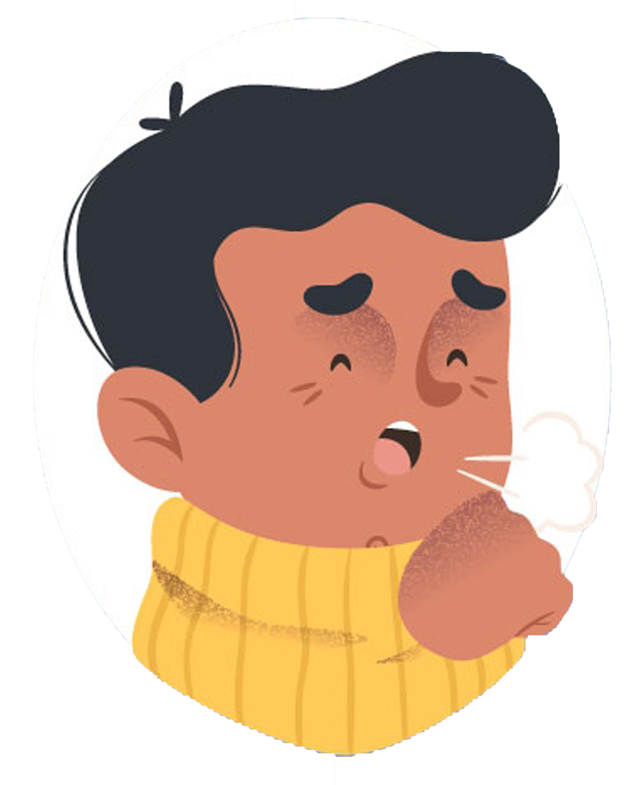
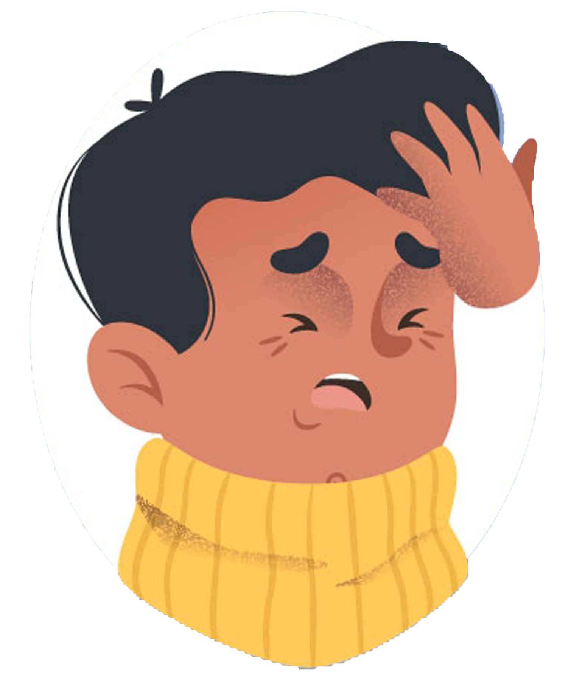

Definisi
Virus Corona atau severe acute respiratory syndrome coronavirus 2 (SARS-CoV-2) adalah virus yang menyerang sistem pernapasan. Penyakit karena infeksi virus ini disebut COVID-19. Virus Corona bisa menyebabkan gangguan ringan pada sistem pernapasan, infeksi paru-paru yang berat, hingga kematian.
Severe acute respiratory syndrome coronavirus 2 (SARS-CoV-2) yang lebih dikenal dengan nama virus Corona adalah jenis baru dari coronavirus yang menular ke manusia. Walaupun lebih banyak menyerang lansia, virus ini sebenarnya bisa menyerang siapa saja, mulai dari bayi, anak-anak, hingga orang dewasa, termasuk ibu hamil dan ibu menyusui.
Infeksi virus Corona disebut COVID-19 (Corona Virus Disease 2019) dan pertama kali ditemukan di kota Wuhan, China pada akhir Desember 2019. Virus ini menular dengan sangat cepat dan telah menyebar ke hampir semua negara, termasuk Indonesia, hanya dalam waktu beberapa bulan.
Hal tersebut membuat beberapa negara menerapkan kebijakan untuk memberlakukan lockdown dalam rangka mencegah penyebaran virus Corona. Di Indonesia sendiri, diberlakukan kebijakan Pembatasan Sosial Berskala Besar (PSBB) untuk menekan penyebaran virus ini.
Coronavirus adalah kumpulan virus yang bisa menginfeksi sistem pernapasan. Pada banyak kasus, virus ini hanya menyebabkan infeksi pernapasan ringan, seperti flu. Namun, virus ini juga bisa menyebabkan infeksi pernapasan berat, seperti infeksi paru-paru (pneumonia).
Selain virus SARS-CoV-2 atau virus Corona, virus yang juga termasuk dalam kelompok ini adalah virus penyebab Severe Acute Respiratory Syndrome (SARS) dan virus penyebab Middle-East Respiratory Syndrome (MERS). Meski disebabkan oleh virus dari kelompok yang sama, yaitu coronavirus, COVID-19 memiliki beberapa perbedaan dengan SARS dan MERS, antara lain dalam hal kecepatan penyebaran dan keparahan gejala.
Gejala Virus Corona (COVID-19)

Demam

Batuk
 Sakit Tenggorokan
Sakit Tenggorokan

Sakit Kepala
Gejala-gejala COVID-19 ini umumnya muncul dalam waktu 2 hari sampai 2 minggu setelah penderita terpapar virus Corona.
Pencegahan
Sampai saat ini, belum ada vaksin untuk mencegah infeksi virus Corona atau COVID-19. Oleh sebab itu, cara pencegahan yang terbaik adalah dengan menghindari faktor-faktor yang bisa menyebabkan Anda terinfeksi virus ini, yaitu:
- Terapkan physical distancing, yaitu menjaga jarak minimal 1 meter dari orang lain, dan jangan dulu ke luar rumah kecuali ada keperluan mendesak.
- Gunakan masker saat beraktivitas di tempat umum atau keramaian, termasuk saat pergi berbelanja bahan makanan.
Rutin mencuci tangan dengan air dan sabun atau hand sanitizer yang mengandung alkohol minimal 60%, terutama setelah beraktivitas di luar rumah atau di tempat umum.
- Jangan menyentuh mata, mulut, dan hidung sebelum mencuci tangan.
- Tingkatkan daya tahan tubuh dengan pola hidup sehat, seperti mengonsumsi makanan bergizi, berolahraga secara rutin, beristirahat yang cukup, dan mencegah stres.
- Hindari kontak dengan penderita COVID-19, orang yang dicurigai positif terinfeksi virus Corona, atau orang yang sedang sakit demam, batuk, atau pilek.
- Tutup mulut dan hidung dengan tisu saat batuk atau bersin, kemudian buang tisu ke tempat sampah.
- Jaga kebersihan benda yang sering disentuh dan kebersihan lingkungan, termasuk kebersihan rumah.
Untuk orang yang diduga terkena COVID-19 atau termasuk kategori ODP (orang dalam pemantauan) maupun PDP (pasien dalam pengawasan), ada beberapa langkah yang bisa dilakukan agar virus Corona tidak menular ke orang lain, yaitu:
- Lakukan isolasi mandiri dengan cara tinggal terpisah dari orang lain untuk sementara waktu. Bila tidak memungkinkan, gunakan kamar tidur dan kamar mandi yang berbeda dengan yang digunakan orang lain.
- Jangan keluar rumah, kecuali untuk mendapatkan pengobatan.
- Bila ingin ke rumah sakit saat gejala bertambah berat, sebaiknya hubungi dulu pihak rumah sakit untuk menjemput.
- Larang orang lain untuk mengunjungi atau menjenguk Anda sampai Anda benar-benar sembuh.
- Sebisa mungkin jangan melakukan pertemuan dengan orang yang sedang sedang sakit.
- Hindari berbagi penggunaan alat makan dan minum, alat mandi, serta perlengkapan tidur dengan orang lain.
- Pakai masker dan sarung tangan bila sedang berada di tempat umum atau sedang bersama orang lain.
- Gunakan tisu untuk menutup mulut dan hidung bila batuk atau bersin, lalu segera buang tisu ke tempat sampah.
Kondisi-kondisi yang memerlukan penanganan langsung oleh dokter di rumah sakit, seperti melahirkan, operasi, cuci darah, atau vaksinasi anak, perlu ditangani secara berbeda dengan beberapa penyesuaian selama pandemi COVID-19. Tujuannya adalah untuk mencegah penularan virus Corona selama Anda berada di rumah sakit. Konsultasikan dengan dokter mengenai tindakan terbaik yang perlu dilakukan.